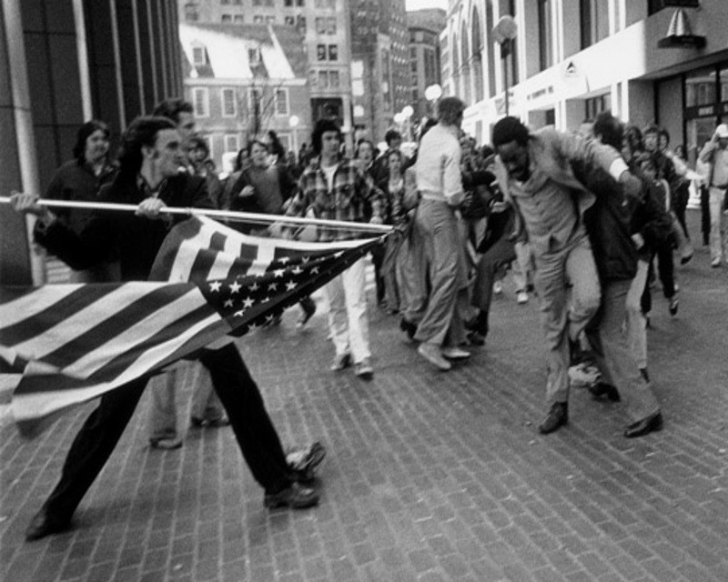

Amerikan otobüslerinde ırk ayrımının kaldırılması 1965’te gerçekleşti, ancak sular 70’lerin sonuna kadar durulmadı. Burada siyahi bir avukat ve insan hakları aktivistinin ırkçı bir Amerikalı genç tarafından bayrakla saldırıya uğradığını görüyoruz. Stanley Forman’a 1976 yılında The Soiling of Old Glory adlı fotoğraf Pulitzer Ödülü’nü getirdi.
